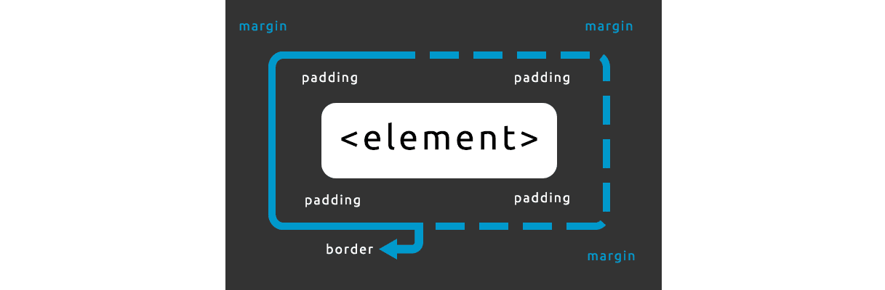

Cours HTML/CSS — Niveau Terminale
- Fichiers HTML et CSS : 📁
1. Structure d'une page HTML
Tout fichier HTML commence par une structure de base obligatoire. Sans elle, le navigateur peut mal interpréter le code.
<!DOCTYPE html>
<html lang="fr">
<head>
<meta charset="UTF-8">
<meta name="viewport" content="width=device-width, initial-scale=1.0">
<title>Titre de la page</title>
<link rel="stylesheet" href="style.css">
</head>
<body>
<!-- Le contenu visible de la page va ici -->
</body>
</html>
Ce que signifie chaque ligne :
<!DOCTYPE html>— indique au navigateur que c'est du HTML5<html lang="fr">— la racine du document,langprécise la langue<head>— informations invisibles sur la page (titre, style, encodage…)<meta charset="UTF-8">— permet d'afficher les accents et caractères spéciaux<meta name="viewport"…>— indispensable pour le responsive sur mobile<title>— texte affiché dans l'onglet du navigateur<link rel="stylesheet">— lien vers le fichier CSS<body>— tout ce qui est visible à l'écran
2. Les balises HTML essentielles
Titres
Il existe 6 niveaux de titres, du plus important au moins important.
<h1>Titre principal (un seul par page)</h1>
<h2>Sous-titre</h2>
<h3>Sous-sous-titre</h3>
<h4>Titre de niveau 4</h4>
<h5>Titre de niveau 5</h5>
<h6>Titre de niveau 6</h6>
Paragraphe et mise en forme du texte
<p>Ceci est un paragraphe. Il peut contenir du texte normal.</p>
<p>On peut mettre du texte en <strong>gras</strong> ou en <em>italique</em>.</p>
<p>On peut aussi <span style="color: red;">colorier</span> une partie du texte.</p>
<!-- Retour à la ligne forcé (à utiliser avec parcimonie) -->
<p>Première ligne.<br>Deuxième ligne.</p>
<!-- Ligne de séparation horizontale -->
<hr>
Les commentaires
Les commentaires ne s'affichent pas dans le navigateur. Ils servent à documenter le code.
<!-- Ceci est un commentaire HTML, invisible dans le navigateur -->
3. Les liens et les images
Les liens
<!-- Lien vers un site externe -->
<a href="https://www.google.fr">Aller sur Google</a>
<!-- Lien qui s'ouvre dans un nouvel onglet -->
<a href="https://www.google.fr" target="_blank">Ouvrir dans un nouvel onglet</a>
<!-- Lien vers une autre page du même projet -->
<a href="contact.html">Page de contact</a>
<!-- Lien vers une section de la même page -->
<a href="#section2">Aller à la section 2</a>
<h2 id="section2">Section 2</h2>
Les images
<!-- Image locale (dans le même dossier) -->
<img src="photo.jpg" alt="Description de l'image">
<!-- Image depuis internet -->
<img src="https://picsum.photos/400/300" alt="Image aléatoire">
<!-- Image avec taille définie -->
<img src="photo.jpg" alt="Photo" width="300" height="200">
Important : L'attribut
altest obligatoire. Il décrit l'image pour les moteurs de recherche et les personnes malvoyantes.
4. Les listes
Liste non ordonnée (à puces)
<ul>
<li>Pomme</li>
<li>Banane</li>
<li>Orange</li>
</ul>
Liste ordonnée (numérotée)
<ol>
<li>Allumer l'ordinateur</li>
<li>Ouvrir le navigateur</li>
<li>Aller sur le site</li>
</ol>
Listes imbriquées
<ul>
<li>Fruits
<ul>
<li>Pomme</li>
<li>Banane</li>
</ul>
</li>
<li>Légumes</li>
</ul>
5. Les tableaux
<table>
<thead>
<tr>
<th>Prénom</th>
<th>Nom</th>
<th>Âge</th>
</tr>
</thead>
<tbody>
<tr>
<td>Alice</td>
<td>Dupont</td>
<td>17</td>
</tr>
<tr>
<td>Bob</td>
<td>Martin</td>
<td>18</td>
</tr>
</tbody>
</table>
Les balises :
<table>— le tableau<thead>— l'en-tête du tableau<tbody>— le corps du tableau<tr>— une ligne (table row)<th>— une cellule d'en-tête (en gras par défaut)<td>— une cellule normale (table data)
6. Les formulaires
<form action="traitement.php" method="post">
<!-- Champ texte -->
<label for="nom">Nom :</label>
<input type="text" id="nom" name="nom" placeholder="Votre nom">
<!-- Email -->
<label for="email">Email :</label>
<input type="email" id="email" name="email">
<!-- Mot de passe -->
<label for="mdp">Mot de passe :</label>
<input type="password" id="mdp" name="mdp">
<!-- Zone de texte multiligne -->
<label for="message">Message :</label>
<textarea id="message" name="message" rows="4"></textarea>
<!-- Case à cocher -->
<input type="checkbox" id="cgu" name="cgu">
<label for="cgu">J'accepte les CGU</label>
<!-- Boutons radio -->
<input type="radio" id="oui" name="reponse" value="oui">
<label for="oui">Oui</label>
<input type="radio" id="non" name="reponse" value="non">
<label for="non">Non</label>
<!-- Liste déroulante -->
<select name="ville">
<option value="paris">Paris</option>
<option value="lyon">Lyon</option>
<option value="marseille">Marseille</option>
</select>
<!-- Bouton d'envoi -->
<button type="submit">Envoyer</button>
</form>
7. <div> et <span>
Ces deux balises sont des conteneurs neutres : elles n'ont aucun sens sémantique, elles servent uniquement à appliquer du style ou à organiser le code.
<div> — conteneur en bloc
Un <div> prend toute la largeur disponible et crée un retour à la ligne avant et après lui. On l'utilise pour regrouper plusieurs éléments ensemble.
<div class="carte">
<h2>Mon titre</h2>
<p>Mon texte...</p>
</div>
<span> — conteneur en ligne
Un <span> s'insère dans une phrase sans créer de retour à la ligne. On l'utilise pour cibler un mot ou une partie d'une ligne.
<p>Le prix est <span class="prix">29,90 €</span> seulement.</p>
Elles serviront surtour lorsqu'on incluera du CSS.
8. Relier le CSS au HTML
Il existe trois façons d'écrire du CSS.
Méthode 1 — Fichier externe (recommandée)
Dans le <head> du HTML :
<link rel="stylesheet" href="style.css">
Dans le fichier style.css :
h1 {
color: blue;
}
Méthode 2 — Balise <style> dans le HTML
<head>
<style>
h1 {
color: blue;
}
</style>
</head>
Méthode 3 — Style en ligne (à éviter)
<h1 style="color: blue;">Mon titre</h1>
La méthode 1 est toujours préférée : elle sépare le fond (HTML) de la forme (CSS) et facilite la maintenance.
9. Les sélecteurs CSS
Un sélecteur CSS désigne quel(s) élément(s) on veut styliser.
/* Sélecteur de balise — cible tous les <p> */
p {
color: gray;
}
/* Sélecteur de classe — cible tous les éléments avec class="titre" */
.titre {
font-size: 24px;
}
/* Sélecteur d'identifiant — cible l'élément avec id="menu" (unique) */
#menu {
background-color: black;
}
/* Sélecteur combiné — un <p> à l'intérieur d'un .carte */
.carte p {
color: darkgray;
}
/* Sélecteur enfant direct */
.menu > li {
display: inline;
}
/* Plusieurs sélecteurs en même temps */
h1, h2, h3 {
font-family: Arial;
}
/* Sélecteur universel (tous les éléments) */
* {
box-sizing: border-box;
}
Classes vs Identifiants :
Classe (.) |
Identifiant (#) |
|
|---|---|---|
| Utilisation | Plusieurs éléments | Un seul élément |
| HTML | class="nom" |
id="nom" |
| CSS | .nom { } |
#nom { } |
10. Les propriétés CSS de base
Texte et typographie
p {
color: #333333; /* Couleur du texte */
font-family: Arial, sans-serif; /* Police */
font-size: 16px; /* Taille */
font-weight: bold; /* Gras (normal, bold, 100-900) */
font-style: italic; /* Italique */
text-align: center; /* Alignement : left, right, center, justify */
text-decoration: underline; /* Soulignement */
line-height: 1.6; /* Interlignage */
letter-spacing: 2px; /* Espacement entre les lettres */
text-transform: uppercase; /* Majuscules, lowercase, capitalize */
}
Couleurs et arrière-plan
div {
color: red; /* Couleur du texte */
background-color: #f0f4ff; /* Couleur de fond */
background-image: url("bg.jpg"); /* Image de fond */
background-size: cover; /* cover, contain, ou taille */
background-position: center; /* Position de l'image */
background-repeat: no-repeat; /* Répétition */
opacity: 0.8; /* Transparence (0 = invisible, 1 = opaque) */
}
Les façons d'écrire une couleur en CSS :
/* Nom de couleur */
color: red;
/* Hexadécimal */
color: #ff0000;
/* RGB */
color: rgb(255, 0, 0);
/* RGBA (avec transparence) */
color: rgba(255, 0, 0, 0.5);
/* HSL */
color: hsl(0, 100%, 50%);
Bordures
div {
border: 1px solid black; /* Raccourci : épaisseur style couleur */
border-top: 2px dashed red; /* Bordure uniquement en haut */
border-radius: 10px; /* Coins arrondis */
border-radius: 50%; /* Cercle parfait (si width = height) */
}
11. Le modèle de boîte (Box Model)
Chaque élément HTML est une boîte rectangulaire composée de 4 zones.

div {
width: 300px; /* Largeur du contenu */
height: 150px; /* Hauteur du contenu */
padding: 20px; /* Espace intérieur (tous les côtés) */
padding: 10px 20px; /* vertical | horizontal */
padding: 5px 10px 15px 20px; /* haut | droite | bas | gauche */
margin: 20px; /* Espace extérieur (tous les côtés) */
margin: 0 auto; /* Centrer un bloc horizontalement */
border: 2px solid #ccc;
}
/* Astuce importante : inclure padding et border dans width */
* {
box-sizing: border-box;
}
12. Les unités CSS
/* Unités absolues */
p { font-size: 16px; } /* pixels — la plus utilisée */
p { font-size: 12pt; } /* points — pour l'impression */
/* Unités relatives */
p { font-size: 1em; } /* relatif à la taille du parent */
p { font-size: 1rem; } /* relatif à la taille de la racine (html) */
div { width: 50%; } /* pourcentage de l'élément parent */
div { width: 50vw; } /* pourcentage de la largeur de l'écran */
div { height: 100vh; } /* pourcentage de la hauteur de l'écran */
13. Flexbox
Flexbox permet de disposer les éléments en ligne ou en colonne facilement.
Sur le conteneur parent
.conteneur {
display: flex;
/* Direction */
flex-direction: row; /* en ligne (défaut) */
flex-direction: column; /* en colonne */
flex-direction: row-reverse; /* en ligne, inversé */
/* Alignement horizontal */
justify-content: flex-start; /* au début */
justify-content: flex-end; /* à la fin */
justify-content: center; /* au centre */
justify-content: space-between; /* espace entre les éléments */
justify-content: space-around; /* espace autour des éléments */
/* Alignement vertical */
align-items: stretch; /* étire les éléments (défaut) */
align-items: flex-start;
align-items: flex-end;
align-items: center; /* centre verticalement */
/* Retour à la ligne automatique */
flex-wrap: wrap;
gap: 16px; /* espace entre les éléments */
}
Sur les éléments enfants
.element {
flex: 1; /* prend tout l'espace disponible */
flex: 2; /* prend 2 fois plus de place que flex: 1 */
flex: 0 0 200px; /* taille fixe de 200px */
}
Exemple pratique — 3 cartes côte à côte
<div class="grille">
<div class="carte">Carte 1</div>
<div class="carte">Carte 2</div>
<div class="carte">Carte 3</div>
</div>
.grille {
display: flex;
gap: 20px;
}
.carte {
flex: 1;
padding: 20px;
background-color: #fff;
border: 1px solid #ddd;
border-radius: 8px;
}
14. Le responsive design
Le responsive design permet d'adapter l'affichage à toutes les tailles d'écran.
Les media queries
/* Styles par défaut (mobile first) */
.conteneur {
flex-direction: column;
}
/* Tablette (768px et plus) */
@media (min-width: 768px) {
.conteneur {
flex-direction: row;
}
}
/* Desktop (1024px et plus) */
@media (min-width: 1024px) {
.conteneur {
max-width: 1200px;
margin: 0 auto;
}
}
Points de rupture courants
| Appareil | Largeur minimale |
|---|---|
| Mobile | < 768px |
| Tablette | 768px |
| Desktop | 1024px |
| Grand écran | 1440px |
Exemple complet — navigation responsive
/* Mobile : liens empilés */
nav {
display: flex;
flex-direction: column;
}
/* Desktop : liens en ligne */
@media (min-width: 768px) {
nav {
flex-direction: row;
gap: 24px;
}
}
15. Les pseudo-classes et pseudo-éléments
Pseudo-classes (état de l'élément)
/* Au survol de la souris */
a:hover {
color: red;
text-decoration: none;
}
/* Lien déjà visité */
a:visited {
color: purple;
}
/* Lien actif (au clic) */
a:active {
color: orange;
}
/* Champ de formulaire sélectionné */
input:focus {
border-color: blue;
outline: none;
}
/* Premier enfant d'un parent */
li:first-child {
font-weight: bold;
}
/* Dernier enfant */
li:last-child {
border-bottom: none;
}
/* Enfants alternés (lignes de tableau) */
tr:nth-child(even) {
background-color: #f5f5f5;
}
Pseudo-éléments (partie d'un élément)
/* Première lettre */
p::first-letter {
font-size: 48px;
float: left;
}
/* Première ligne */
p::first-line {
font-weight: bold;
}
/* Avant le contenu de l'élément */
.carte::before {
content: "→ ";
color: blue;
}
/* Après le contenu de l'élément */
.carte::after {
content: " ✓";
color: green;
}
16. Projet final — Page complète
Voici un exemple de page complète mettant en pratique tout le cours.
index.html
<!DOCTYPE html>
<html lang="fr">
<head>
<meta charset="UTF-8">
<meta name="viewport" content="width=device-width, initial-scale=1.0">
<title>Portfolio — Alice Dupont</title>
<link rel="stylesheet" href="style.css">
</head>
<body>
<header>
<div class="header-inner">
<h1>Alice Dupont</h1>
<nav>
<a href="#about">À propos</a>
<a href="#projets">Projets</a>
<a href="#contact">Contact</a>
</nav>
</div>
</header>
<main>
<section id="about">
<h2>À propos</h2>
<p>Bonjour ! Je suis élève en Terminale NSI, passionnée de développement web.</p>
</section>
<section id="projets">
<h2>Mes projets</h2>
<div class="grille">
<article class="carte">
<h3>Site de recettes</h3>
<p>Un site avec mes recettes préférées.</p>
<a href="#">Voir le projet</a>
</article>
<article class="carte">
<h3>Jeu du pendu</h3>
<p>Un jeu interactif en JavaScript.</p>
<a href="#">Voir le projet</a>
</article>
<article class="carte">
<h3>Application météo</h3>
<p>Affichage de la météo en temps réel.</p>
<a href="#">Voir le projet</a>
</article>
</div>
</section>
<section id="contact">
<h2>Contact</h2>
<form>
<label for="nom">Nom</label>
<input type="text" id="nom" name="nom" placeholder="Votre nom">
<label for="email">Email</label>
<input type="email" id="email" name="email" placeholder="votre@email.fr">
<label for="message">Message</label>
<textarea id="message" name="message" rows="5"></textarea>
<button type="submit">Envoyer</button>
</form>
</section>
</main>
<footer>
<p>© 2024 Alice Dupont — Tous droits réservés</p>
</footer>
</body>
</html>
style.css
* {
box-sizing: border-box;
margin: 0;
padding: 0;
}
body {
font-family: Arial, sans-serif;
color: #333;
line-height: 1.6;
}
/* ---- HEADER ---- */
header {
background-color: #1a1a2e;
color: white;
padding: 16px 24px;
position: sticky;
top: 0;
}
.header-inner {
max-width: 1100px;
margin: 0 auto;
display: flex;
justify-content: space-between;
align-items: center;
}
nav {
display: flex;
gap: 24px;
}
nav a {
color: white;
text-decoration: none;
}
nav a:hover {
color: #a8d8ff;
}
/* ---- SECTIONS ---- */
section {
padding: 60px 24px;
max-width: 1100px;
margin: 0 auto;
}
h2 {
font-size: 28px;
margin-bottom: 24px;
color: #1a1a2e;
}
/* ---- GRILLE DE CARTES ---- */
.grille {
display: flex;
gap: 20px;
flex-wrap: wrap;
}
.carte {
flex: 1;
min-width: 200px;
background: #fff;
border: 1px solid #e0e0e0;
border-radius: 10px;
padding: 24px;
transition: box-shadow 0.2s;
}
.carte:hover {
box-shadow: 0 4px 20px rgba(0,0,0,0.1);
}
.carte h3 {
margin-bottom: 10px;
color: #1a1a2e;
}
.carte a {
display: inline-block;
margin-top: 12px;
color: #0077cc;
text-decoration: none;
font-weight: bold;
}
/* ---- FORMULAIRE ---- */
form {
display: flex;
flex-direction: column;
gap: 10px;
max-width: 500px;
}
input, textarea {
padding: 10px;
border: 1px solid #ccc;
border-radius: 6px;
font-size: 15px;
font-family: Arial, sans-serif;
}
input:focus, textarea:focus {
outline: none;
border-color: #0077cc;
}
button {
padding: 12px 24px;
background-color: #1a1a2e;
color: white;
border: none;
border-radius: 6px;
font-size: 16px;
cursor: pointer;
align-self: flex-start;
}
button:hover {
background-color: #0077cc;
}
/* ---- FOOTER ---- */
footer {
background-color: #f5f5f5;
text-align: center;
padding: 20px;
font-size: 14px;
color: #666;
border-top: 1px solid #e0e0e0;
}
/* ---- RESPONSIVE ---- */
@media (max-width: 768px) {
.header-inner {
flex-direction: column;
gap: 12px;
}
.grille {
flex-direction: column;
}
}